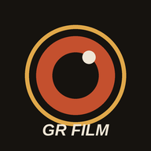

GR
Positive
Film
28mm · f/2.8

홈 화면에 앱으로 추가
아이콘 누르면 바로 열려요
추가하기
×
사진을 불러오면
리코 GR3 포지티브 필름 톤으로 보정해요
사진첩에서 고르기
AFTER
꾹 누르면 원본
DEVELOPING…
FILM · 7
옆으로 넘겨보세요 →
① DAYLIGHT
맑은 날
하늘·산·풍경 · 코발트 블루, 묵직한 톤
② WARM FILM
따뜻한 필름
건물·꽃·골목 · 앰버, 크림빛 하이라이트
③ CLASSIC CHROME
FUJI 느낌
클래식 크롬
거리·다큐 · 차분한 색, 단단한 그림자
④ CLASSIC NEG
FUJI 느낌
클래식 네거
일상·스냅 · 청록 그림자, 깊은 빨강
⑤ VELVIA
FUJI 느낌
벨비아
풍경·꽃 · 쨍한 원색, 진한 하늘
⑥ NOSTALGIC NEG
FUJI 느낌
노스탤직 네거
오후 햇살 · 앰버 하이라이트, 포근함
⑦ ACROS
FUJI 느낌
아크로스 흑백
인물·골목 · 깊은 흑백, 고운 입자
강도
100
그레인
0
사진 선택
보정본 저장
버튼이 안 되면: 사진 앱에서 사진을
복사
한 뒤
여기를
길게 눌러 붙여넣기
사진 앱에 저장하기
아래 사진을
길게 눌러 → "사진 앱에 저장"
하세요
파일로 다운로드